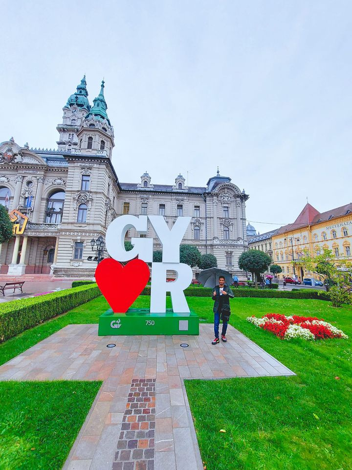

Holds a BSc in computer engineering with a grade of excellent with honor (92%),From Hodeidah University, Yemen. Currently, I am doing an MSc, in computer science engineering at Szechenyi Istvan University- Gyor, Hungary. Familiar with Python, C++, C#, SQL & NoSQL databases, and other cutting-edge tools. Passionate about learning everything related to Data science and Artificial Intelligence. I am looking forward to collaborating with data scientists and AI engineers. :)

Gyor, Hungary, 2021